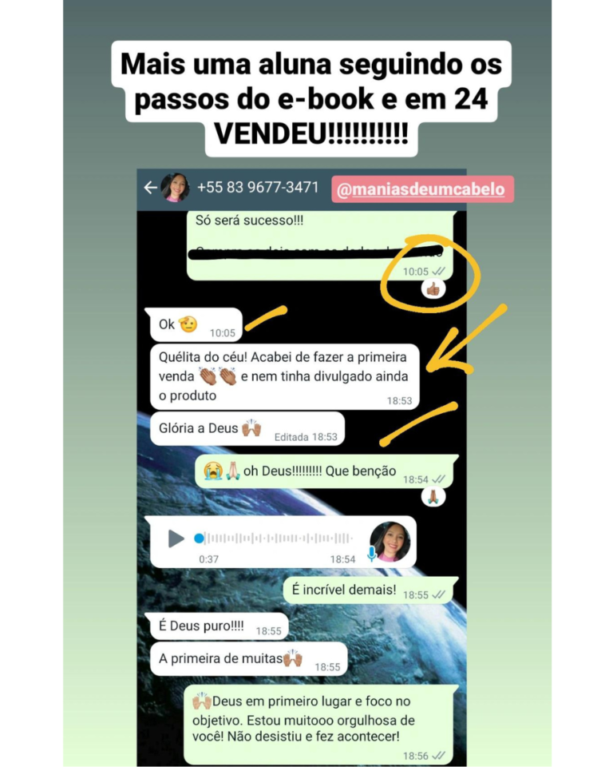
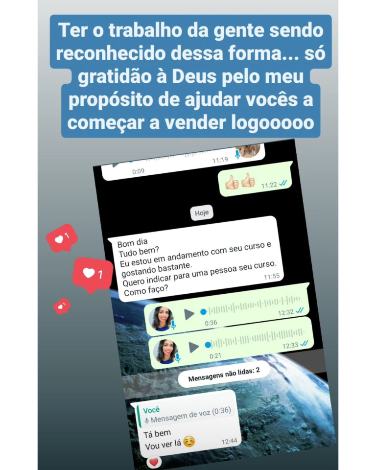
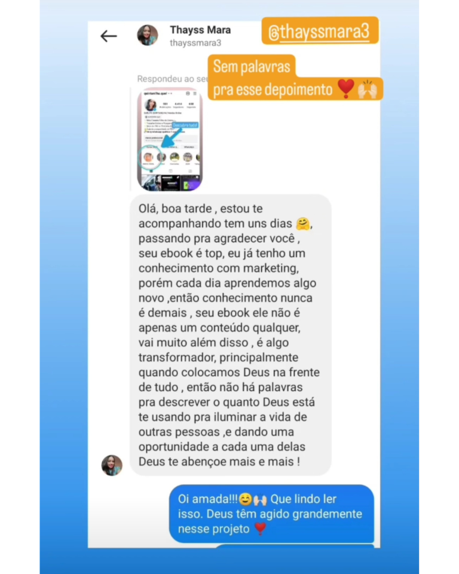
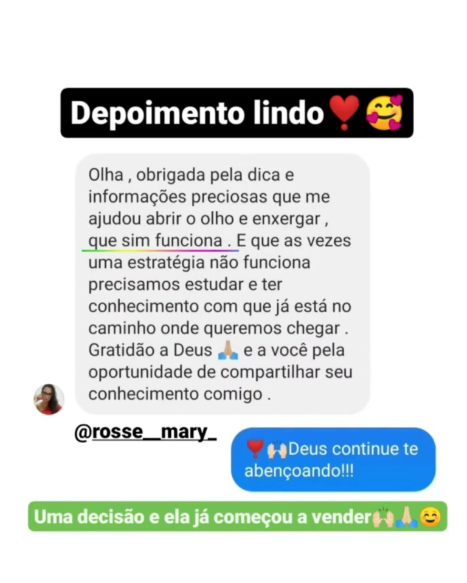
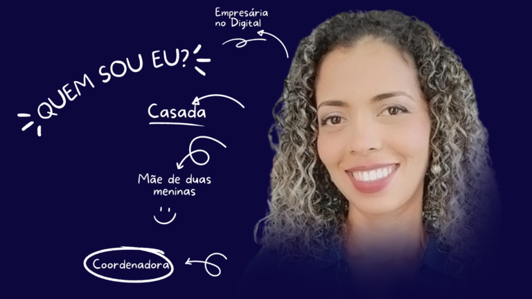

O que você vai conquistar ao acessar o E-BOOK 10K PRODUTOS FÍSICOS:
- Como criar sua estrutura de vendas
- A escolha dos produtos validados
- Atração de mais de 6k de Seguidores
- Seu próximo passo para faturar 30K
Relatos de quem comprou e aprovou:




O que é o E-BOOK 10K PRODUTOS FÍSICOS?
- Estratégias para alcançar seus 10K
- Publicações para vender todos os dias
- Turbinar o Instagram na Prática
- 4 Aulas gravadas para te ajudar a chegar mais rápido no seu resultado
Como funciona o
E-BOOK 10K PRODUTOS FÍSICOS?
É um treinamento com aulas gravadas com o passo a passo que você vai aplicar para criar e vender seus produtos através do seu perfil do Instagram usando o botão turbinar!
Independente do nicho que você atua. Serve para perfis de lojas fisicas, lojas online, para quem vende cursos, e-books, encapsulados! Você terá em mãos a estratégia que eu uso para vender muito e com pouco esforço usando estratégicamente meu perfil do Instagram.
Sobre Quélita Quintanilha
Meu nome é Quélita Quintanilha, sou professora concursada e atualmente, coordenadora da escola que sou efetivada. Sou casada, tenho duas filhas adolescentes.
Minha jornada no digital, iniciou curiosa na época que ficamos confinados fugindo da pandemia. Nesse tempo, comecei a assistir vídeos sobre finanças e empreendedorismo e me deparei com pessoas anunciando o mercado de afiliados. Com muita curiosidade e um pezinho de medo, acreditei inicialmente que só poderia ser um tipo de golpe muito bem elaborado… afinal, diziam ser dinheiro fácil de ganhar e sou o tipo de pessoa que acredita que o trabalho é que faz o ganho, e como verão, eu não estava errada.
O mercado de afiliados, ou marketing digital é um trabalho árduo como qualquer outro. O que difere, são as inúmeras possibilidades de trabalhar de qualquer lugar em qualquer hora e ainda ter uma estrutura trabalhando em boa parte desse tempo por você.
Te mostrarei tudo o que precisei fazer e fiz para alcançar meus primeiros 10 mil sendo afiliada de produtos físicos. Meu propósito aqui, é abençoar sua vida encurtando seus passos para ter muito mais do que eu tive nesse início!
Parabéns por ter chegado até aqui…
Você está a um clique de descobrir o segredo por trás dos perfis milionários e que vendem todos os dias. O E-BOOK 10K PRODUTOS FÍSICOS é para você que quer vender muito mais, sabendo exatamente qual a melhor estratégia de vendas.
PLANO COMPLETO
SUPER OFERTA
(MELHOR NEGÓCIO)
- Ebook do meu caminho para faturar 10K
- Alcance seus 6K de seguidores
- Escolha dos produtos campeões
- Usando Stories de maneira lucrativa
- Seu próximo passo será os 10K
De R$97
Por R$37
(Exclusivamente hoje)APROVEITE AGORA: Você não vai encontrar esse preço depois.
Garantindo o curso agora, você não corre risco nenhum
Se por qualquer motivo, você perceber que não faz sentido para você tudo que você receber dentro do treinamento, basta você me enviar um e-mail que vou te devolver 100% do seu investimento. O risco é totalmente meu. E eu posso fazer isso porque acredito e confio no poder do E-BOOK 10K PRODUTOS FÍSICOS, aplicando as estratégias ensinadas do treinamento que tem colocado muito dinheiro no meu bolso.